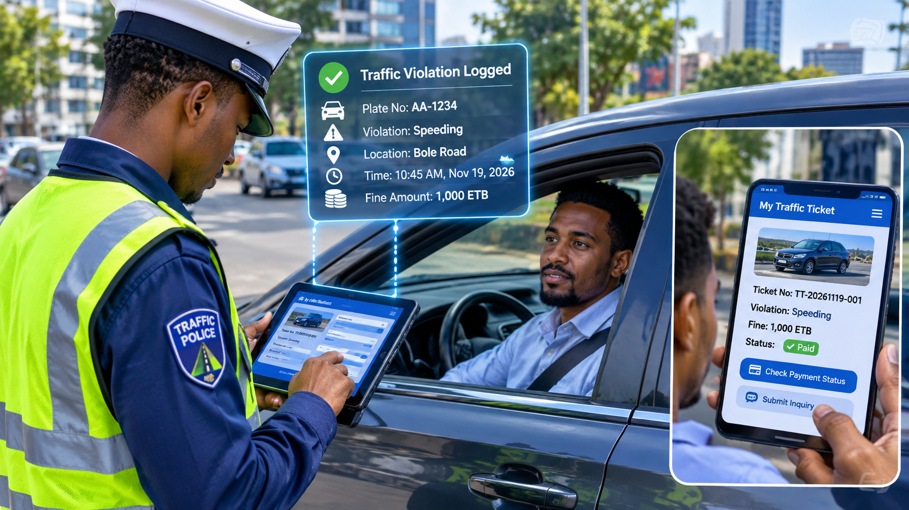

*The Story of Ethiopia & Its Traffic Management 🇪🇹*
Ethiopia's traffic management story is a journey from traditional road transportation to a modern system that aims to make roads safer, reduce accidents, control congestion, and improve transportation through technology.
In the past, traffic management in Ethiopia relied heavily on manual methods, with traffic police officers stationed at key intersections to direct vehicles and pedestrians. However, as urbanization increased and vehicle numbers grew, this approach became insufficient to handle the complexities of modern traffic flow.
*How E-Ticketing Works*
- An officer logs the traffic violation digitally at the scene.
- The ticket details and fine amount are recorded in the system.
- The driver reviews the record, checks payment status, or submits an inquiry.

Wants to know more about E-Ticketing?